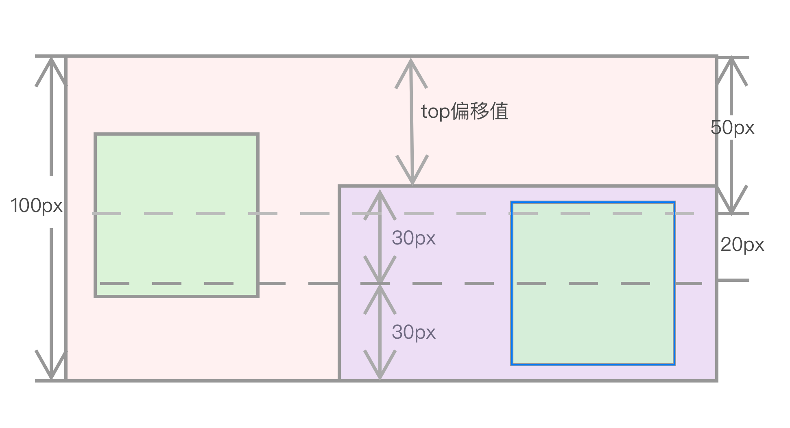
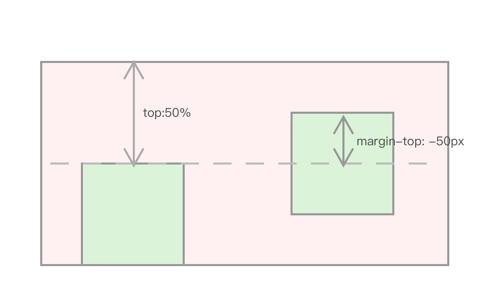

第2节：块状元素垂直居中
是用什么属性帮助 margin:auto 实现垂直居中呢？
Absolute + margin:auto
CSS 2 规范 10.6.4 Absolutely positioned, non-replaced elements 中有：
对于 绝对定位非替换元素高度的计算规则： 'top' + 'margin-top' + 'border-top-width' + 'padding-top' + 'height' + 'padding-bottom' + 'border-bottom-width' + 'margin-bottom' + 'bottom' = height of containing block
并且有两个 if 与我们场景相关： If all three of 'top', 'height', and 'bottom' are auto, set 'top' to the static position and apply rule number three below. If none of the three are 'auto': If both 'margin-top' and 'margin-bottom' are 'auto', solve the equation under the extra constraint that the two margins get equal values. 如果
top,height,bottom三个属性都是 auto,top 取当元素是static position时的值，其他的计算看下面三条规则（此处省略） 如果上面提及的三个属性都不是 auto，并且如果 margin-top 和 margin-bottom 都为 auto，平分剩余的空间使两个 margin 值相等
那么问题就很明确了，我们可以对子元素设置 position:absolute ,并且四周的距离设置为 0 ，同时设置margin:auto:
<div class="parent">
<div class="child">block元素</div>
</div>
.parent {
position: relative;
width: 400px;
height: 400px;
}
.child {
position: absolute;
width: 150px;
height: 150px;
top:0;
bottom: 0;
left: 0;
right: 0;
margin: auto;
}
这样 .child 元素就在 parent 元素内部实现水平垂直居中
如果我们仅仅想对元素进行垂直居中，那么根据上文提到的 absolute 的规范，我们可以设置 ausolute 的属性top:0;bottom:0 ,那么 margin：auto 平分上下空间使得 margin 值相等，从而实现元素单纯的垂直居中，
如果子元素要在父元素的左侧垂直居中，那么根据absolute的规范，我们设置 left：0 即可，右侧同理；当然，此方法也可以实现元素的水平居中，设置 ausolute 的属性 left:0;right:0 ，原理相同
当我们不想使子元素进行绝对的垂直居中时，想使元素相对垂直居中的位置偏下z px时，我们把问题分解：
元素相对垂直居中的位置再向下偏移 z px -> 元素居中的中线比绝对垂直居中的中线向下偏移 z px -> top向下偏移z px * 2
上面阐述的步骤可能不是很直观，让我们举个🌰：父元素的高度是 100 px， 我们想让子元素的位置比绝对垂直居中的位置向下偏20px，那么我们：
元素垂直居中的中线 50px + 20px -> 元素居中的中线 70px -> 元素居中的中线离父元素底部 30px ，那么子元素绝对居中的顶部的线离父元素底部距离为 30px 2 = 60px ，那么top的偏移值应该是 20px 2 = 40px

通过借助绝对定位与 margin:auto 使元素居中是规范中明确规定的，没有二意性而且大部分浏览器都有实现，没有兼容问题，而且我们现在也没有发现什么特殊的场景让使absolute+margin:auto 对块级元素的居中不能完美适配。
但是借助 top， bottom = 0 时垂直居中，我们还可以借助另一种方式使 margin 可以帮助元素实现垂直居中
Absolute + 负margin
.parent {
position: relative;
width: 600px;
height: 300px;
}
.child {
position: absolute;
width: 100px;
height: 100px;
top: 50%;
margin-top: -50px; //(content+padding+border)/2: ;
}
先使用 top: 50%（根据父元素height计算）,将子元素的 top 线推到父元素的中线处，
再根据 margin-top:-50px（子元素高度的一半），将子元素推上去，使子元素与父元素的中线一致。

但是这种方式很遗憾的是必须元素的 height 已知，那如果元素的 height 未知，怎么办？
负margin小技巧：
负margin-top:元素上移
负margin-left:元素左移
要注意的是 margin-right 与 margin-bottom 的移动规则与 margin-top 和 margin-left 不一样，也不能借此实现该元素的水平垂直居中。
absolute + translate
我们可以使用 translate， 使子元素移动：
.chlid {
position: absolute;
top: 50%;
transform: translate(0, -50%);
}
利用 transform 将子元素推上去子元素的 50%,
这种方式令元素垂直居中的缺点是不是所有浏览器都支持，遇到了头疼的 IE8 ， transform 就直接歇菜了。
到此，我们只了解了块状元素居中的方式，在文档流中，除了块状元素还有另外一大块——行内元素。相比块状元素而言，行内元素的居中更为难以理解和复杂，所以，你准备好了么？